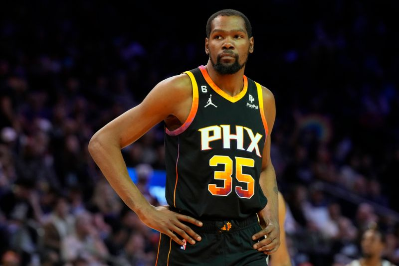

This is Kevin Durant's profile. I hope you can become one of his fans!Kevin Durant, often referred to as "KD," is one of the most outstanding basketball players of his generation and is regarded as one of the greatest forwards in NBA history.
Born on September 29, 1988, in Washington, D.C., Durant showcased his basketball talent early on, earning McDonald's All-American honors in high school. He played one collegiate season at the University of Texas, where he averaged 25.8 points and 11.1 rebounds per game. His stellar performance earned him the Naismith College Player of the Year and the Wooden Award before declaring for the 2007 NBA Draft.
Durant was selected as the second overall pick by the Seattle SuperSonics (now Oklahoma City Thunder). He made an immediate impact in his rookie season, winning the NBA Rookie of the Year Award. Over the next several years, he established himself as one of the league's top players, winning four scoring titles and leading the Thunder to the NBA Finals in 2012. In 2014, Durant won the NBA Most Valuable Player (MVP) award, cementing his status as one of the premier players in the league.